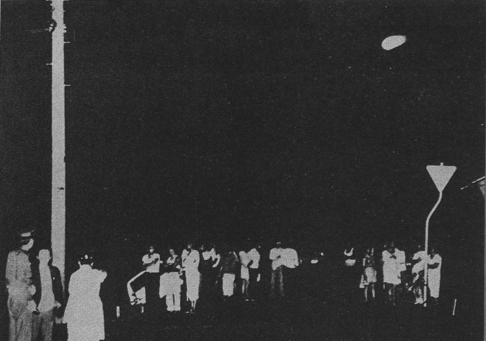

Au "Gué du Roux" Déformation patoisante du "Gué du Roi" sur lequel Louis XIII s'engagea avec ses troupes en 1622 pour affronter les protestants réfugiés dans l'île de Riez, en un temps ou la mer venait jusqu'à Soullans.
près de Soullans (bourg du marais breton vendéen situé à 6 km au sud de Challans), M.
et MmeRenaudineau qui circulent en voiture avec leur enfant de quelques
mois. En arrêtant au stop ils s'aperçoivent de la présence d'un étrange phénomène situé dans le pré qui leur
fait face : un demi-cercle lumineux "posé" dans le pré composé de petites lumières rondes, rouges
non-clignotantes, placées les unes près des autres. Les lumières sont concentrées, non-éblouissantes et
n'éclairent pas la surface du pré. A l'intérieur mêêdemi-cercle, la nuit était aussi dense qu'autour. Le
témoin braque ses phares sur l'apparition. Aucune réaction. Son épouse prend peur et supplie son mari de partir,
ce qu'il fait. Il n'y aura pas de traces relevées, le pré étant alors destiné à des bovidés, s'il en exista
elles furent très rapidement piétinées Bénéteau, Gérard: LDLN n° 185.
Lancement de Pionner 11 à destination de
Jupiter puis de Saturne.
Disparition en Haute-Loire d'une grue de plusieurs tonnes, 8 m de haut et équipée d'une flèche de 3 m.
Mike Shea roule au volant de sa voiture quand soudain, un
rayon de lumière éclaire une grange située à 50 m environ de la route. Silencieux et cerclé de lumières
clignotantes, un ovni de grande taille apparaîîngoisse commence pour le témoin une fois que le rayon s'éteint
car il croit sentir quelque chose approcher derrière lui. Tandis que l'ovni le survole, il ressent une secousse
électrique le long de la colonne vertébrale. Il atteint finalement Olney, sa destination,
mais découvre avec stupéfaction qu'il a mis 2 h de plus que prévu. Après une dizaine d'années parsemées de
cauchemars et de malaises diffus, il décidera de faire appel à Budd Hopkins, le célèbre
spécialiste des affaires d'enlèvements. Des séances de régression hypnotique lui font relater un l'enlèvement dont
il aurait été victime après avoir été survolé par l'ovni. Il raconte avoir soudain aperçu sur le bord de la route 4
entités étranges : 3 de grande taille (environ 1,80 m) et une plus petite. Elles ressemblaient à de grands insectes
allongés, comme enveloppées dans une cuirasse de plastique sombre, et se tenaient dressées sur leurs pattes arrière
plutôt arquées. Leurs 2 paires de pattes antérieures leur servaient à saisir. Leur tête était arrondie et leurs yeux
globuleux. Il aurait été emmené à l'intérieur de l'ovni où il aurait subi différents examens plus ou moins
traumatisants.
Récupération de 5 corps suite à un crash dans le nord-ouest de l'Arizona.
(22 mai ?) Observation de Masaaki Kudou à Tomakomai, dans l'île
d'Hokaido (Japon).
L'ovni photographié lors d'un accident au Japon

Un ovni est photographié (ci-contre) par la police lors d'un accident au Japon.
Les Etats-Unis découvriraient que les extraterrestres procèdent à plus d'enlèvement qu'il n'en est indiqué dans
les listes qui leur sont communiquées.